在上一节的结尾我们提到：要想彻底摆脱被音乐理论束缚的困境，最好的方法就是去了解乐理的“出生与成长史”。了解历史听起来或许有些严肃枯燥，但这其实是至关重要的第一步。因为唯有亲自走过这段历程，你才能真正从“音乐理论”这四个字所自带的无形威压与权威光环中彻底解脱出来。

身为创作者，其实根本不该纠结于“遵守还是违背理论”，而应该处于“支配驾驭理论”的上位姿态。而建立这种健康心态的最快路径，正是看清它的真实原形——也就是它的历史。这就像是一剂思想上的疫苗：只要亲身领略过音乐理论背后跌宕起伏的历史大戏，你便再也不会被理论的虚幻权威所迷惑。因此，在阅读本文时，完全不需要死记硬背其中的历史人物或作品名称。文中穿插的音频也只是为感兴趣的读者准备的参考资料，无需全部听完，只需感受整体脉络即可。
 4. 古典乐与音乐理论
4. 古典乐与音乐理论
音乐理论并非西方独有，古埃及、中国等世界各大古文明都有着源远流长的乐理体系。不过在此我们要梳理的，是以欧美为主流的西方主流音乐理论的简明演进史。
公元前：古希腊的声学
谈及西方音乐理论的源头，通常都会追溯到公元前的古希腊时代。相传正是由毕达哥拉斯学派对声音展开了极其关键的研究与发现。
毕达哥拉斯 (B.C.582-496)
“整数简直就是神迹啊！那么，竖琴琴弦的长度，要是能按整数比率来分割，发出的声音岂不是会极其动听？[55]”
现代钢琴与吉他都有固定的调音律制基准，而在这些律制成型的过程中，凝聚了无数数学家的心血与探索，毕达哥拉斯便是其中最著名的代表之一。 不过，这在很大程度上属于声学物理学的研究范畴，距离我们今天所谓的“歌曲创作”还有相当遥远的距离。此后希腊虽然发展出了音阶理论，但要演进到我们现代人所熟知的“音乐理论”主题，中间还要跨越长达一千多年的历史空白。
9世纪起：基督教与和声
西方音乐理论走向实质性飞跃的第一核心驱动力，正是宗教。随着基督教诞生并席卷西方，圣咏（赞美诗）等宗教音乐迅速发展。起初，这些圣咏就像佛教僧侣念经一样全员齐唱同一条旋律，但天长日久大家逐渐厌倦，开始尝试叠加和声声部来进行合唱。如何才能编配出协调悦耳的复调和音？一门名为“和声（Harmony）”的宏大领域就此拉开了序幕[30]。
歌单中第1首是最初期的齐唱风格，听起来确实如同诵经一般；第2至6首则分别展现了12至16世纪的风格演进。你能直观感受到织体配器变得越来越华丽丰富。在这一时期的圣歌中，并没有哪一个人独占“主唱”，而是每个声部都拥有同等地位的独立旋律线条，通过相互交织、呼应来构建宏伟的和声。重点在于：这一时期迅猛发展的，正是专为合唱量身定制的“复调对位与声部呼应理论”。
✝️ 教会的戒律锁链
基督教长期坐镇理论发展的核心，这对音乐理论的发展形态产生了不可估量的深远影响。为了无限趋近于上帝与宇宙的神圣秩序，教会坚信：教会音乐必须建立在*理性（Ratio）*的基础之上。例如，在6世纪极具权威的音乐典籍中曾留下这样的训诫：
波爱修斯 (480-524?)
“绝不可委身于凡俗的肉耳！听觉感官充满错觉与谬误。请只相信严谨的规制与理性。缺乏理性的所谓创作，根本一文不值……[56]”
这番言论今天看来近乎不可理喻，但在当时却是至高无上的金科玉律，以至于整个西方音乐界在此后近一千年的时光里都深深笼罩在这套价值观的阴影之下。在当时的语境中，音乐理论被赋予的核心使命，正是充当确保音乐神圣性与合法性的形而上逻辑工具[31]。 为什么直到今天，许多人依然潜意识里觉得音乐理论是裁判音乐“正确与错误”的终极法官？一路溯源到源头的根源，正来自中世纪基督教的这种神圣理性崇拜。
14世纪：来自音乐前线的实战逻辑
然而在中世纪欧洲，并非只有教堂里的严肃宗教音乐。在教墙之外，吟游诗人与流浪艺人们繁荣着生机盎然的世俗音乐。
这是13至16世纪西欧的世俗音乐，主题涵盖了情歌、祝酒歌、战歌和世俗歌剧小调等。相比宗教音乐，这些市井之声拥有大得多的自由度，许多重大革新恰恰诞生于烟火人间。
尤其到了14世纪，面对演唱节奏日益复杂的现实诉求，年轻一代的理论家们开始着手对记谱体系进行现代化大重构。
腓力·德·维特里 (1291?-1361)
“嗯……现行的记谱体制根本跟不上现场演奏复杂的节奏需求了！必须增加更细腻的音符形态，搭建更精密的节拍框架！”
维特里将自己的划时代学说定名为《新艺术》（Ars Nova，拉丁语“新技法”之意），以此高调彰显其先进性[32]。全新的节拍与记谱体系迅速风靡蔓延，并不可阻挡地反向渗透进宗教音乐之中。
✝️ 前线与教会的碰撞①
然而，这引起了教会神职人员与保守理论家的极度仇视。在他们眼中，把不符合“神圣三位一体三拍子完美秩序”的世俗二拍子复杂节奏引入神圣教堂，无异于公然亵渎上帝，断不可容忍[33]。
列日之雅各布 (1260-1340)
“这帮年轻人鼓捣出的所谓‘精密’音符和怪异节奏，完全丧失了上帝的神圣秩序！失去神圣秩序的‘技巧’有何价值？古往的音乐是何等典雅、质朴而纯洁理性，全被这帮轻浮后生糟蹋成下流不堪的玩物了……”[57]
看，宛如教科书般“倚老卖老、痛心疾首”的老学究说教，早在14世纪就已经活灵活现。摇滚乐和嘻哈乐最初诞生风靡时也曾被斥为低俗垃圾，人类几百年来其实一直在重复完全相同的代际吵闹😵💫 然而保守派的徒劳抵抗终究无法阻挡时代大潮，“新艺术”系统迅速确立为主流标准。站在21世纪今人的视角回望，这绝非什么“下流堕落”，而是音乐不可逆转的进化。换言之：在当今这个时代，那些被某些人指责为“低俗轻浮”的新兴音乐，百年之后未尝不会被历史加冕为时代的飞跃与进化。《新艺术》大论战，正是音乐实战前线凭借鲜活生命力首次击退教会僵化教条的标志性历史事件。
16世纪：精巧的妥协与改革
当跨地域国际文化交流日益频繁，理论与创作前线的脱节变得更加不可调和。例如在英格兰，由于孤悬海外隔海相望，受教皇教条的禁锢相对微弱，民间音乐很早就自由地运用饱满的和声。15世纪当英国音乐大规模传入法兰西大陆时，其甜美圆润的听感给欧陆音乐界带来了无与伦比的听觉震撼。犹如一阵来自海外的甜美风暴，那些曾被视作离经叛道的音乐瞬间在大合唱中传唱开来。
打开音乐示例 ↗约翰·邓斯特布尔 《你是多么美丽（Quam pulchra es）》 (1420-30?)
理论家们在狂热追捧新潮流的艺术家与顽固的保守教条之间受尽夹板气。直到进入16世纪，意大利理论家扎利诺（Gioseffo Zarlino）巧妙地借用基督教义编制了一套精妙的数学修辞，才终于成功撬动了传统理论的禁锢。
乔泽夫·扎利诺 (1517-1590)
“呃……上帝用了6天创造天地，苍穹上有6大天体……这就证明数字‘6’是神圣至极的！因此，基于1到6数比构成的三和弦和声，也是体现上帝神圣秩序的结晶……完美！写成这样，教会那帮老头子总挑不出刺了吧？[58]”
强行附会圣经典故与天文学象征，为大众喜闻乐见的音乐前线实操颁发“许可证”。这招看似顺从“必须具备神圣理性证明”的教条枷锁，实则是一记极其精明的以子之矛攻子之盾[34]。
✝️ 前线与教会的碰撞②
然而，理论家们也不可能永远向神学教条低眉顺眼。15世纪之后教会权威日渐式微，人类迎来了风起云涌的“科学革命”前夜。大名鼎鼎的天文学家伽利略·伽利莱的父亲——文森佐·伽利莱（Vincenzo Galilei）不仅是位优秀的音乐家与理论家，而且正是扎利诺的学生。他公开对恩师的玄虚学说开炮：
文森佐·伽利莱 (1520-1591)
“老师……整天念叨上帝造物、神秘整数比，差不多得了！做音乐靠的是肉耳听觉，不是趴在羊皮纸上做算术！先做物理实验，再看创作实践，这才是硬道理吧！[59]”
儿子后来通过望远镜观测支持日心说硬刚教廷，父亲早在音乐领域就已经举起了实证科学的大旗，真可谓有其父必有其子。老伽利莱的呼声振聋发聩，伴随着17世纪科学革命的到来，音乐理论终于开始一步步从圣经的神秘枷锁中松绑。
17世纪：创作范式的大转折
老伽利莱开火的不仅是神秘神学，还有当时整个音乐界沉迷已久的作曲形式——多声部复调交织对位。
文森佐·伽利莱 (1520-1591)
“声部叠得七零八落，连歌词唱的啥都听不清了！你们这帮人根本不是在表达情感，纯粹就是在显摆复调炫技吧？！”
这是对繁冗复杂化演进路线的一记沉重反击拳。伽利莱与佛罗伦萨的同仁们（卡梅拉塔社团 Camerata）聚集在一起，力推回归质朴有力的模式：单一清晰的主旋律＋和声伴奏。

不过，“单旋律＋乐器伴奏”本就是世俗民谣玩了几百年的旧套路，直接拿出来缺乏足够的艺术门槛。如何才能拔高逼格？于是，一门将戏剧台词全部用歌唱形式呈现的综合艺术应运而生——这便是歌剧（Opera）。取材于古希腊悲剧史诗，所有台词皆以生动歌喉诉说。既展现了高雅艺术价值，又为了让观众听懂台词而必然保证主旋律的单一与清晰——这便是他们心中最理想的艺术范式[36]。
打开音乐示例 ↗ 蒙特威尔第 歌剧《奥菲欧》选段 “Mira ch’a se n’alletta” (1607)
蒙特威尔第 歌剧《奥菲欧》选段 “Mira ch’a se n’alletta” (1607)
如你所听到的，这是早期歌剧奠基人蒙特威尔第的传世名作。在整个17世纪的意大利，歌剧掀起了狂热的风潮。适逢欧洲君主专制王权鼎盛期，在王公贵族庞大财力赞助下，歌剧制作日益奢华，迅速膨胀为当时顶级的超级商业娱乐帝国。
✝️ 前线与教会的碰撞③
17世纪同样也是音乐实战派与教会保守派爆发史诗级终局大决战的年代。上面提到的作曲大师蒙特威尔第，因在作品中打破严苛的声学禁则、使用大胆刺耳的音响，招致了教会理论家的指名痛骂：
乔瓦尼·玛丽亚·阿尔图西 (1540?-1613)
“瞧瞧这里！毫无征兆地砸出一坨污秽肮脏的刺耳噪音……你脑子里装的是浆糊吗？！这简直是对神圣调性秩序的亵渎！连野蛮下贱都分不清吗？这种贻笑大方的跳梁小丑玩意儿，注定短命暴毙！[60]”
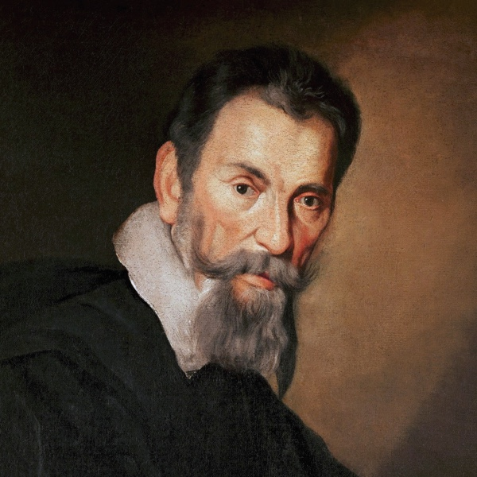
克劳迪奥·蒙特威尔第 (1567-1643)
“哈？你当我不知道规则？听好了，这是一首撕心裂肺的失恋之歌！唯有在此处故意引入不协和的浑浊与摩擦，才能撕开歌词最深沉的痛苦！这就是属于我们‘第二代（第二作法）’的新技法，你们那帮食古不化的老头子懂个屁😂”
扎利诺当年耗尽心血写出的前沿理论，仅仅过了半个世纪就沦为了被新一代年轻人踩在脚下的陈腐教条。更具划时代意义的是：蒙特威尔第并不是因为不懂乐理而犯错，而是在深谙传统规则的前提下，为了艺术情感表达的需要而蓄意打破它。这在音乐史上引发了地震。 不协和音与浑浊的音响，有着唯有它才能承载的独特艺术感染力！和声必须永远平正中庸优美，不过是中世纪教会强加的单一审美枷锁而已。音乐的艺术表达本应更加辽阔丰富、自由深邃。蒙特威尔第的决绝回击，成为艺术家彻底挣脱教会教条绑架的关键丰碑[37]。
和弦理论的破土发芽
在“单旋律＋和声伴奏”模式的大潮下，17世纪意大利的民间市井迎来了五弦吉他的爆发普及。相比昂贵的羽管键琴与鲁特琴，吉他造价低廉、便携轻巧，堪称平民伴奏的绝佳利器。而在吉他流传普及的过程中，一种用单个字母指代整组和弦指法的体系被发明了出来：
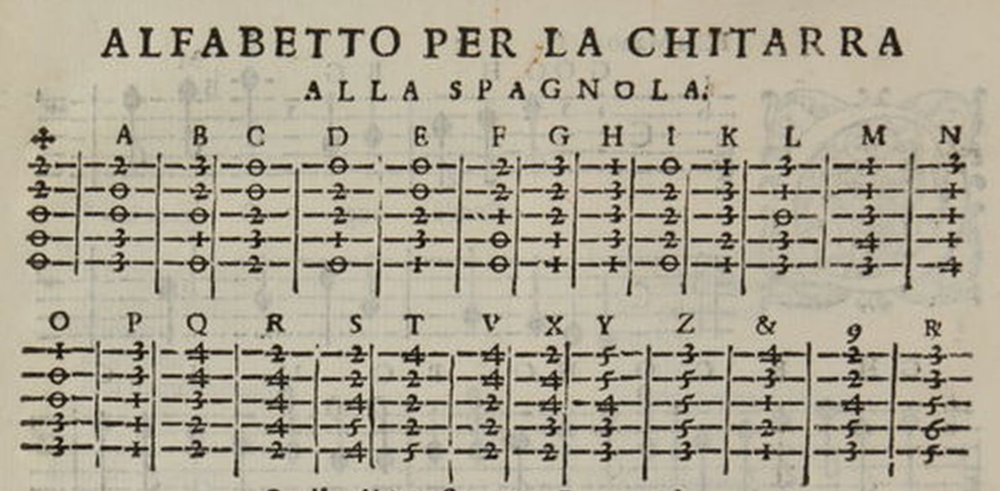
将五根弦的按弦位置整合记忆为一个代表字母[38]弹吉他的朋友看到这里一定心领神会——这正是当今“Dm”、“G7”等现代和弦标记（Chord Name）的原始雏形。尽管当时尚未建立严谨的调性音程逻辑，只是简单地给不同手型按顺序标上字母[39]，但这一风潮对学院派理论界造成了颠覆性的冲击。在此之前，所谓和声默认是由多条人声声部横向交织而成的；而自此时起，“由伴奏乐器‘哗啦’一声同时扫响的一团纵向音块”这一全新视角，开始强力挤入人们的认知视野。 于是，整个17世纪见证了**和弦（Chord）**概念的正式破土成型。通向现代“和弦理论（Chord Theory）”的大门，终于在此刻被推开了一道缝隙[40]。

历经沧桑来到17世纪末，音乐好不容易挣脱了教会的束缚，并迎来了“和弦”概念的雏形，但这依旧只能算是漫长历史的前传。从这里开始，真正与我们今天息息相关的现代乐理基石才将正式拔地而起……
随着伽利略与牛顿奠定了现代科学的大厦，教会不再是世间“绝对真理的守门人”。神圣真理深植于生生不息的自然造化之中，人类当凭借自身的理性去破译它——伴随着这种启蒙主义的狂热浪潮，18世纪拉开了大幕。
18世纪前半：“和弦理论”的体系化飞跃
1722年，西方音乐理论史上最重磅的皇冠级著作问世——法国作曲家拉莫（Jean-Philippe Rameau）写下了名垂青史的《和声论（Traité de l'harmonie）》。
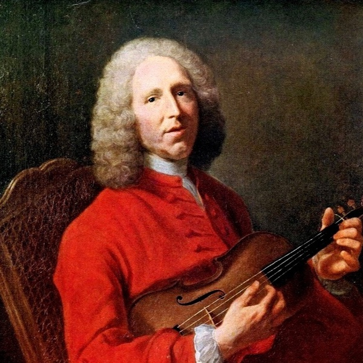
让-菲利普·拉莫 (1683-1764)
“我彻底顿悟了！过去的因果全搞反了！从来不是旋律交织生出了和声，而是和声先于一切存在，旋律不过是和弦骨架的一环投影！”
拉莫的理论不啻为一场哥白尼式的认知风暴。其最卓越的创见，在于将‘和弦’确立为音乐分析与构筑的基本原子单位，并梳理为高度实用的体系。他集17世纪各路零散灵感之大成，《和声论》堪称西方历史上第一部完备体系化的现代意义上的“和弦理论专著”[41]。
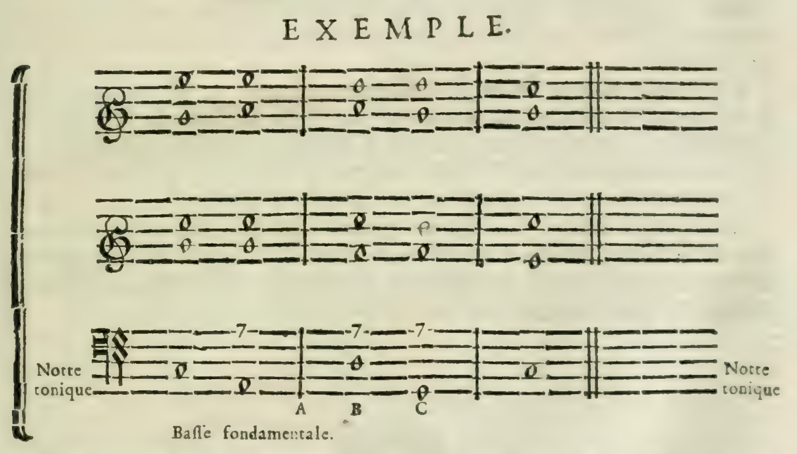

四年后，拉莫进一步借助新兴的物理声学实验成果撰写续作，为自己的理论寻求自然法则的正统性：
让-菲利普·拉莫 (1683-1764)
“和声乃是大自然的鬼斧神工！弦线与人声泛音振动的物理实验早已证实，大自然本身就在歌唱着和弦！”
通过物理实验从自然万物中提炼和弦律动法则——这正是启蒙时代最渴求的理性范式。拉莫的学说如野火燎原般传遍欧洲，世人甚至由衷地将他冠以“音乐界的牛顿”之美誉[42]。
🧬 理论与科学的交锋①
然而，拉莫后期的推演在逻辑严谨性上漏洞百出，短短数十年后就遭到了后辈启蒙思想家们的无情炮轰：
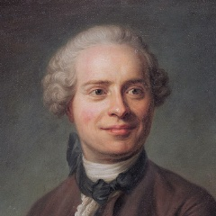
达朗贝尔 (1717-1783)
“诸位听好，我在此向大家讲解拉莫先生的实用理论，但关于他那些玄乎其神的算术比例与几何级数推导，我一概删去了。那些牵强附会的数学游戏对实际作曲毫无半点用处，坦白讲纯属文人的虚妄幻觉！[61]”
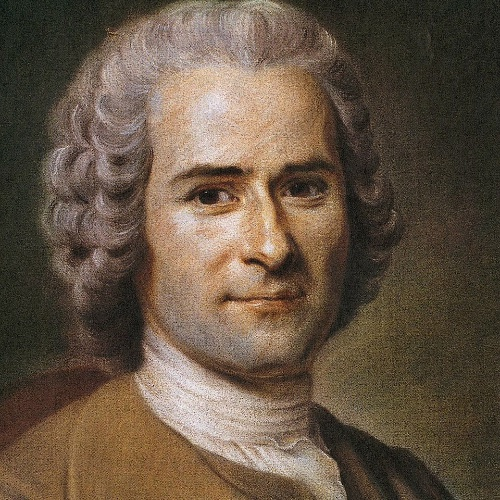
卢梭 (1712-1778)
“他确实提出过能在实践中使用的好点子，但后面的物理论证简直是一团浆糊！把数学公式翻来覆去胡乱套用，这算哪门子自然真理？歇歇吧，不过是拙劣的生搬硬套罢了！[62]”
被各方批判得体无完肤的拉莫晚年心灰意冷，甚至一度遁入神秘主义寻求精神慰藉。他企图一劳永逸破译音乐终极宇宙真理的野心最终化为泡影。 但无论其科学推论存在多少瑕疵，其实用理论体系的核心价值却历久弥新。他的架构奠定了现代和声学的大厦，现行和弦理论很大程度上依然在享用其遗产。今天我们耳熟能详的“主和弦（Tonic）、属和弦（Dominant）、下属和弦（Subdominant）”等核心术语与功能分类概念、以及“转位和弦源于原位和弦根音”的思想，正是拉莫在300年前一手确立的[43]。
理论与创作实况
与此同时，当时的音乐创作现场正处于新旧流派并存的剧烈震荡期。一方面，为王公巨贾量身定制的华贵辉煌音乐依然大行其道：
打开音乐示例 ↗亨德尔 《皇家烟火音乐》 (1749)
另一方面，以 J.S. 巴赫为代表的大师们，则在默不作声地将古老严谨的复调对位技法推向登峰造极的终极艺术绝顶：
打开音乐示例 ↗J.S. 巴赫 《赋格的艺术 Contrapunctus VIII》 (1742-1749?)
这些精巧绝伦的传世经典，显然不是按照拉莫的“和弦功能理论”写出来的。巴赫的次子 C.P.E. 巴赫曾公开声明：
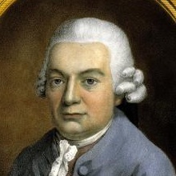
 C.P.E. 巴赫 (1714-1788)
C.P.E. 巴赫 (1714-1788)
“家父与我自己的作曲法则，与拉莫先生那一套理论彻底背道而驰！这一点各位大可以大声向全世界宣告！[63]”
新理论的被接纳需要时间的沉淀。然而在理性启蒙的洗礼下，那种层层堆砌、过分繁缛复杂的对位巴洛克织体确实开始让市民阶层产生审美疲劳。时代开始迫切呼唤拥有清晰对称的形式美感、兼具明快优雅气质的新型音乐：
打开音乐示例 ↗哈塞 歌剧《奥林匹克》选段 “安慰父亲” (1735)
“化繁为简、通俗优美的音乐才最酷”——这种时代审美风向的大逆转，与拉莫简洁明朗的和弦逻辑不谋而合，音乐理论的权力版图由此正式完成了历史交接。
18世纪后半：古典派理论的确立
18世纪后半叶见证了法国大革命颠覆封建王朝，工业革命催生了前所未有的大众市民艺术消费市场。音乐家从前依附于教会或王公豢养的依附地位被打破，“自由独立作曲家”作为一种全新的职业形态登上历史舞台[44]。在音乐史上，这一辉煌时期被称为“古典派（Classical Period）”，其巅峰领军者便是举世闻名的莫扎特与贝多芬。
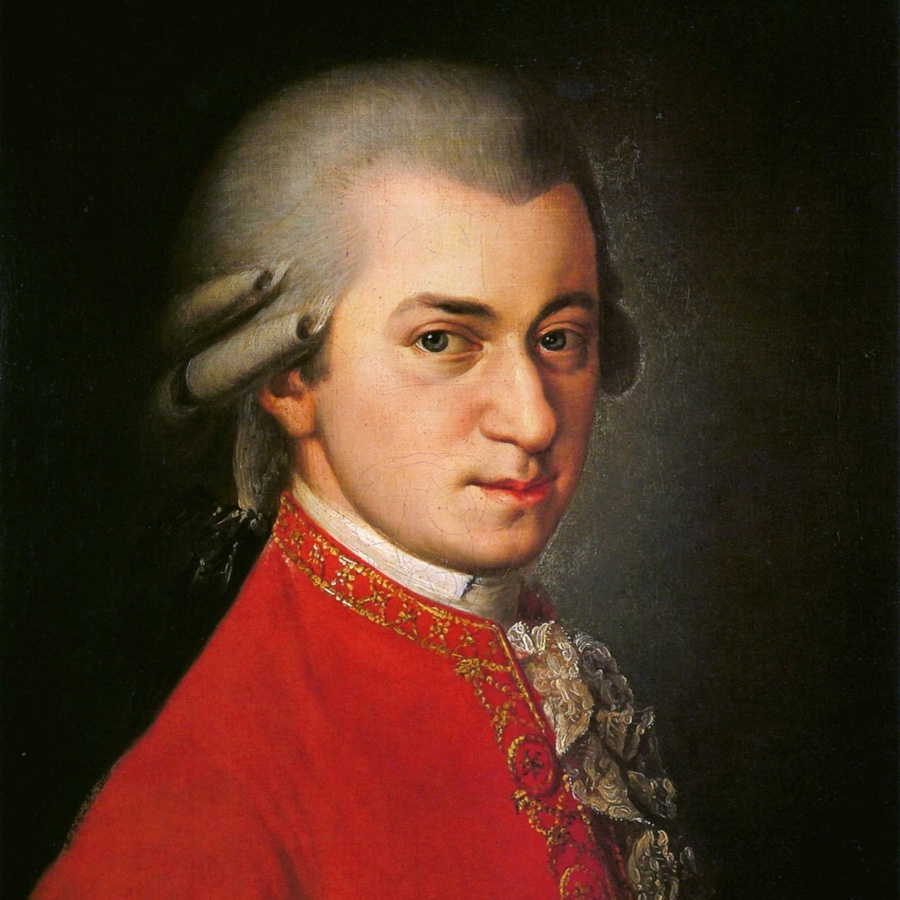
莫扎特 (1756-1791)
“诸位好，又是我！能不能稍微借我点钱周转下？”
这一时期的主流审美彻底拥抱“明澈优雅与理性秩序”。曲目结构清晰对称，旋律琅琅上口易于传唱，简而言之——大众通俗度得到了空前飞跃。
这一变革的背后，既是音乐消费市场向不特定多数市民阶层倾斜的必然结果，也是对教会与封建贵族旧式复杂权威美学的历史反拨[45]。音乐理论家们汲取拉莫的体系为内核，对照这些时代杰作，系统规范化了和声理论。在玛丽·安托瓦内特王后被送上断头台的1793年，革命政府在巴黎创立了国立音乐学院（Conservatoire de Paris）——这是欧洲历史上首个面向全体国民市民的高等音乐学府。大约在1800年前后，标准化教材全面编纂成型，传统古典音乐理论自此宣告大成。
✝️ 建立在“理性”上的规则法典
那么，古典派理论的核心风貌究竟如何？在巴黎音乐学院的权威教材中，已经充斥着“某和弦必须进行至某和弦”、“此类声部进行严令禁止”等大量明确的规范法则与禁则（Prohibitions），音乐的“范式套路”被制定得极度严密严苛。例如大家最熟悉不过的“起立—敬礼—坐下”三段伴奏式终止式，正是最标准不过的基本范式：
当时的严肃古典界普遍认为：遵循这套千锤百炼的标准范式，方能构建起合乎理性逻辑与形式美的高雅音乐。如果学生敢肆意逾越规范任性写曲，导师们必定会严加斥责：
这造就了一个耐人寻味的讽刺局面：人类虽然告别了神权教会的枷锁，逃脱了封建王权的牢笼，但音乐本身却并未因此逃脱规则禁则的束缚。这也很好理解：驱动那个时代的时代精神是“用人类理性找寻唯一优良秩序”的启蒙信念，自然不可能认可“只要听着有趣就怎样都行”的相对主义。 音乐理论充当裁判“正误”之审判官的生态，在古典时代被完整继承了下来。而这套诞生于两百多年前的古典规范法典，正是跨越漫长岁月、直到今天依然在各类乐理书中被奉为“金科玉律”的规则原形之一。 笼罩在音乐理论头顶的迷雾至此揭开了一层：那些看似森严的规则，不过是200年前的前辈为了规范重现他们那个时代的“理性优美音乐”所归纳的时代局限产物。
19世纪：从理性重返感性
古典派理论在建立起高度规范的“终极范式”后，后世音乐家是否就亦步亦趋、恪守陈规了呢？历史的幽默再次上演：恰恰相反，在整个19世纪，离经叛道、充满强烈个人色彩的打破范式之作如同井喷般汹涌爆发！
管弦乐编制空前庞大、演奏技巧挑战生理极限、和声色彩极度复杂浓烈、大量融入各地乡土民谣的民族性格、表现题材包罗万象……创作者们在每一个维度穷尽一切可能张扬自我个性。 人类的思潮总是充满钟摆式的奇妙轮回：上个世纪对理性逻辑的极致推崇，反而物极必反地激发起了一场“比起冰冷的理性，让我们讴歌炙热的感性与鲜活的人性吧！”的浪漫主义狂潮[46]。加之自由市场竞争愈发白热化，独具鲜明辨识度与强烈风格特质的艺术家才能在激烈的商业竞争中脱颖而出[47]。
好不容易梳理归纳的森严规范，转眼间就被叛逆的后辈们砸得稀巴烂……这幕熟悉的历史循环再次重演(ฅ́˘ฅ̀ )
日趋严密的系统化乐理
在独创性作品层出不穷的同时，音乐理论界在忙些什么呢？这一时期，以德国学者为代表的理论界正夜以继日地致力于将乐理梳理得更加符号化与系统化：
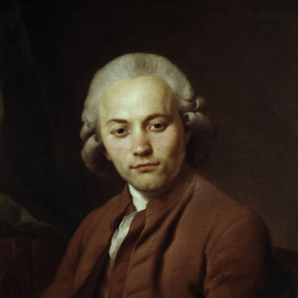
格奥尔格·福格勒 (1749-1814)
“大家听我说，给所有和弦按照音级编上罗马数字（I, IV, V...）来统一管理，岂不是一目了然？！”

胡戈·里曼 (1849-1919)
“罗马数字还不够抽象！把全宇宙所有和弦全部划分为‘Tonic主、Subdominant下属、Dominant属’三大功能阵营，岂不是更透彻？！”
今天全世界音乐人都在享用的罗马数字级数分析与功能和声体系，正是这批学者留下的宝贵遗产。不过在底层底层构架上，他们依旧沿袭了拉莫理论的框架骨血。
🧬 理论与科学的交锋②
那么，真正的现代自然科学又有了怎样的进展呢？18世纪拉莫尝试用初级物理学解释和声遭到了失败，19世纪的人类终于能解开音乐的奥秘了吗？ 飞跃确实是巨大的。随着高倍显微镜与生理解剖学的跨越，人类对人耳听觉器官的运作机制终于获得了突破性认识：
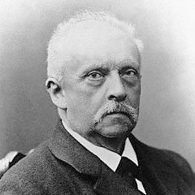
赫尔曼·冯·亥姆霍兹 (1821-1894)
“我终于破译了人耳区分优美音色与噪音的基底膜共振机理！浑浊和弦为什么会产生刺耳不快感（拍音拍频），在生理机制上已经被我完全攻破了！[64]”
研究的触角终于从琴弦的宏观物理震动，深入到了人体微观生理学的领域，这是破译音乐之谜的里程碑一步。然而几乎在同一时刻，对于将“优美”与“刺耳”视为全人类绝对普遍定理的质疑也随之甚嚣尘上：
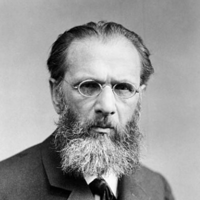
卡尔·施通普夫 (1848-1936)
“稍等片刻！所谓‘协和与悦耳’的审美感知，绝大多数是后天习得的！完全取决于个体的文化习俗与长期的听觉经验塑造。不信，我们去研究一下世界其他非西方民族的听觉感知便知[65]。”
不仅如此，比耳朵更深层次的核心——我们的心智与大脑究竟是如何理解并组织音乐的？现代“心理学”正是在19世纪末作为一门严谨独立学科诞生的：
克里斯蒂安·冯·埃伦费尔斯 (1859-1932)
“一首歌不论移调升降多少个，人类的大脑依然能一瞬间认出是同一条旋律！仔细一想大脑的认知机制简直不可思议！这说明我们的大脑感知旋律，靠的根本不是单个独立音符，而是抓取了全局的整体关系‘形态（Gestalt）’！[66]”
想要破译音乐的奥秘，单纯研究“声波”是远远不够的，必须深入研究“人与大脑认知”本身。19世纪的学界终于达成了这一清醒认识。这些交叉学科在20世纪的深入研究，彻底击碎了拉莫等人曾幻想的“放之四海而皆准的绝对永恒物理真理乐理”；那个所谓的绝对圣殿，就像永远无法接近的海市蜃楼一样在迷雾中消散……
20世纪：从“至上规则”蜕变为“实用工具”
步入20世纪，传统古典形式中对独创性的挖掘终于走向了极致的绝境壁垒。
打开音乐示例 ↗斯特拉文斯基 芭蕾舞剧《春之祭》选段 “献祭之舞” (1913)
这是斯特拉文斯基举世震惊的芭蕾舞剧《春之祭》，描绘了古代异教斯拉夫部落残暴的少女献祭仪式。错乱癫狂的野蛮不对称节拍、凶狠刺耳的剧烈和声撞击、怪诞扭曲的舞蹈体态，宛如一场视听恐怖电影。在原本属于高雅贵妇名流社交的芭蕾殿堂里，身披粗布兽皮的舞者跳着原始野性的异教祭典，这彻底粉碎了西方传统的一切古典审美范式。据说在巴黎香榭丽舍剧院首演时，全场观众因无法接受这一离经叛道的视听冲击而爆发了大规模肢体骚乱。
而这一首，初听之下宛如现代某款东方绿茶广告大片的主题配乐，充满了幽玄的东方意蕴。然而，这其实是法国作曲家德彪西在1903年创作的钢琴曲（后改编为管弦乐版）《宝塔》。他在巴黎世博会上偶遇印尼甘美兰等东方亚洲音乐并深受震撼，随即抛开欧洲传统的调性束缚，将五声音阶与平行和弦融入创作之中。面对学院派对其公然践踏古典和声禁则的指责，德彪西留下了传诵百世的箴言：
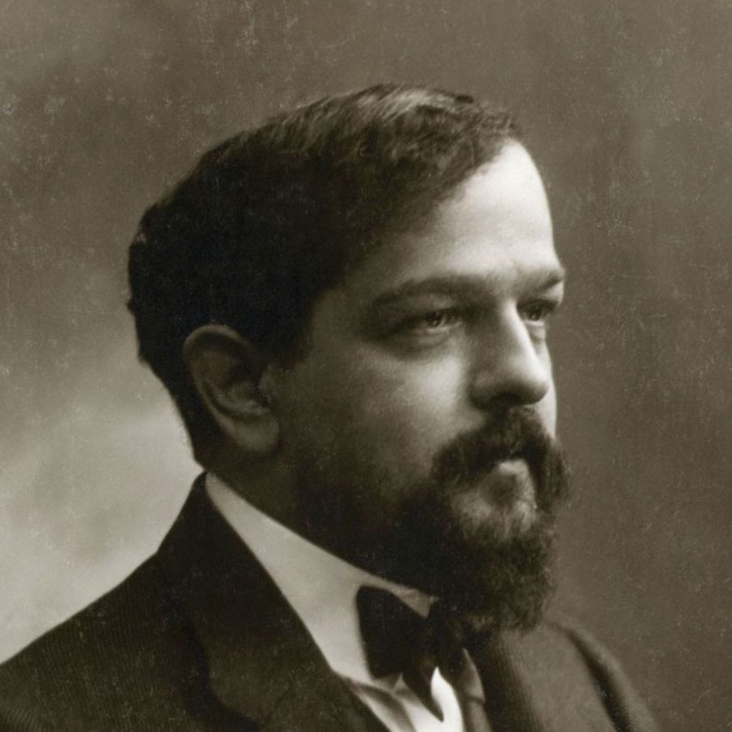
克劳德·德彪西 (1862-1918)
“规则绝不可能创造艺术。从来都是艺术在创造规则[67]。”
放眼西方世界之外的大千世界，人们越来越深刻地意识到：古典时期的所谓禁则法典，充其量只是人类广袤音乐长河中某一个特定历史时期的狭隘范式而已。
艺术在创造规则
当既有的一切和声手法都被前人穷尽挖掘之后，在迷茫中摸索出路的现代派作曲家们，索性将“艺术创造规则”推向了字面意义上的极致实践：
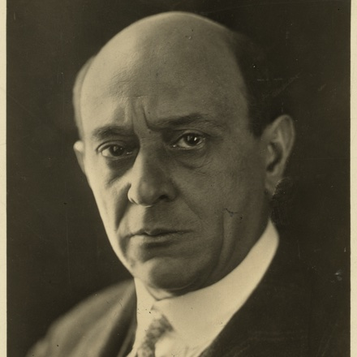
阿诺德·勋伯格 (1874-1951)
“与其在旧规则里挣扎，不如来玩个极限挑战：钢琴上黑键白键总共12个半音，在曲子里必须每个音严格按顺序轮流出现一遍、次数完全均等，不准建立任何主音调性！[68]”
以往的作曲家，比拼的是如何在既有的古典框架内巧妙突围；而到了20世纪，作曲家们达成了全新的觉悟——“既然如此，亲自定制全新的规则体系，才是最高层级的独创！”勋伯格以一己之力颠覆了游戏规则。自此，严肃现代严肃音乐界开启了一场前所未有的“发明作曲算法体系”的思维竞赛。
当把“乐曲必须如此展开”、“乐器必须如此演奏”、“五线谱必须如此绘制”等理所当然的陈旧思维全部清零归零、放飞想象之后，作曲家们猛然惊觉：在这片广袤无垠的声响旷野上，人类从未涉足的全新艺术表现技法简直不可胜数。
到了这个时代，音乐理论在创作者心中早已不再是高高在上的“戒律神旨”，而是完全降格为服务于创作诉求的趁手工具——也就是纯粹的工具（Tool）。想写典雅端庄的古风曲调，就信手拈来古典理论；想探索未曾听闻的先锋声效，就随心所欲定制自己的前卫理论。这就像怪物猎人游戏里根据不同的狩猎目标自由切换武器装备一样，是一件再理所当然不过的日常。

理论的历史，是创造与颠覆的历史
回顾这一圈惊心动魄的历史溯源，我们见证了“理论被后人建立，又被更新的人亲手打破”这样一幕幕充满戏剧张力的轮回：

从这段浩瀚历史中，我们可以提炼出几个至关重要的底层真相： 首先，在任何一个时代，真正的艺术家永远在勇敢试探当时既有理论之外的未知领域；任何石破天惊的革新之作在诞生之初必将承受旧势力的口诛笔伐；然而历史的洪流终会将这些异端沉淀为理论的一部分。 听到“音乐理论”这个词，或许你曾以为它是某种类似于牛顿万有引力定律般不可动摇的永恒客观真理。但事实完全相反：它绝大多数源自特定历史时期的创作实战总结，并在时代审美的更迭中经历着一次又一次推倒重构。
直到21世纪的今天，音乐理论依然是未完成的半成品。因为音乐绝非仅仅是空气振动的物理波动，也不单是刺激耳蜗毛细胞的生理反应，它深植于人类的情感记忆、社会文化与认知心理之中，蕴含着远比单纯数理模型深邃浩瀚得多的生命力。 因此，音乐理论本质上不过是特定历史流派总结的“基本范式模板”，在创作中打破它绝无任何道德包袱与不可逾越的罪名。古典音乐长达千年的自我演进史早已雄辩地印证了这一点。 然而读到这里，或许你心中依然会浮现那句常被长辈念叨的名言：

“心中有型，方能打破常规；连规矩都不懂就谈破格，不过是毫无章法的瞎胡闹罢了！”
难道不从古典理论学起、顺从直觉自由创作真的不行吗？要解答这个疑问，我们必须将目光投向大洋彼岸的另一座新大陆。
5. 美洲大陆与音乐理论
现代流行音乐的骨架元素中，和声体系无疑深受欧洲古典传统的深远泽被。然而若将视线投向和声之外的其他核心维度，绝大部分养分则是在美洲大陆上孕育绽放的。接下来，让我们一窥美洲大陆的音乐理论演化脉络。
19世纪：流行音乐的曲式范式
1776年建国独立的美国，在19世纪开始全面孕育具备本国独特烙印的本土音乐文化。其中最具划时代意义的成果，便是现代流行歌曲的曲式结构（Song Form）。 在当今绝大多数流行音乐流派中，都存在核心的“副歌（Chorus）”。流行歌曲自不必说，嘻哈音乐中的“Hook”、EDM 舞曲中的“Drop”，本质上都承担着副歌高潮的核心功能。这是支撑现代商业音乐具有极高洗脑度与辨识度的黄金公式。而这一经典格式，正是在19世纪中叶的美国被确立普及开来的[48]。
打开音乐示例 ↗斯蒂芬·福斯特 《噢，苏珊娜》 (1848)
这是被誉为“美国音乐之父”的斯蒂芬·福斯特（Stephen Foster）的传世名曲。虽然结构紧凑短小，但你能清晰听到主歌连续进行两遍之后，情绪昂扬地进入“Ooooh Suzanna, don’t you cry for me”的标志性副歌。只要套用了这一经典模版，旋律立刻显得亲切抓耳、扣人心弦。 虽然大家常说音乐是自由的，但全世界海量的商业流行金曲都遵循着这套架构组织展开。尽管由于它太过普及以至于许多学院派乐理书根本不屑于提及，但这同样是极具实用价值的伟大创作“范式理论”。
音乐与种族伤痛
顺带一提，作为19世纪美式流行歌曲象征的《噢，苏珊娜》，其原始歌词中充斥着露骨残酷的黑人种族歧视词汇与戏谑嘲弄[49]。当年在舞台上演绎该曲时，白人艺人必须化着夸张涂黑脸颊、抹大嘴唇的“黑脸秀（Blackface）”小丑妆容——这是在今天看来不可思议的历史糟粕。 被尊为“美国音乐之父”的代表作，竟然脱胎于对黑人奴隶的残酷歧视与丑化——这是美国音乐史不可磨灭的深重伤痕。而音乐理论的演化，同样与这层复杂的种族阶级矛盾紧密缠绕，并在随后的20世纪成为引爆理论变革的导火索。
19世纪：拉丁美洲的律动狂潮
而在加勒比海与中南美洲诸国，尽管殖民压迫同样沉重，但社会环境在某些层面相对宽松。非洲传统打击乐器未被全面封杀，废奴运动普遍早于美国，欧洲白人传统与非洲黑人音乐基因在这里更早迎来了水乳交融的大爆发。 尤其源自非洲大陆的丰富打击乐器与切分节奏律动构筑的舞蹈音乐得到了极大繁荣。截至19世纪末，已孕育出后来演化为伦巴（Rumba）、桑巴（Samba）、雷鬼（Reggae）与雷鬼顿（Reggaeton）等无数风靡全球的母体流派。
打开音乐示例 ↗ Miguel Failde 《Las Alturas de Simpson》 (1879)
打开音乐示例 ↗Chiquinha Gonzaga 《Corta Joca》 (1895)
这种让人情不自禁摇摆起舞的欢快摇摆律动——即我们俗称的“拉丁律动（Latin Grooves）”，早已跨越中南美洲本土，深深植根于现代绝大多数流行舞曲的血脉之中。若单论对现代流行音乐底层“律动（Groove）”的塑造广度与深度，拉丁与非裔音乐的影响力甚至完全压倒了欧洲古典音乐。 实际上，拉丁节奏形态早已发展出了一套高度体系化的结构逻辑：从核心基础骨架模式（Clave），到错位切分（Syncopation）、重音置换等进阶变体，皆有法可依。即便传统欧洲乐理书对此语焉不详，一套严谨博大的“节奏理论（Rhythm Theory）”一直真实而强大地存在着。
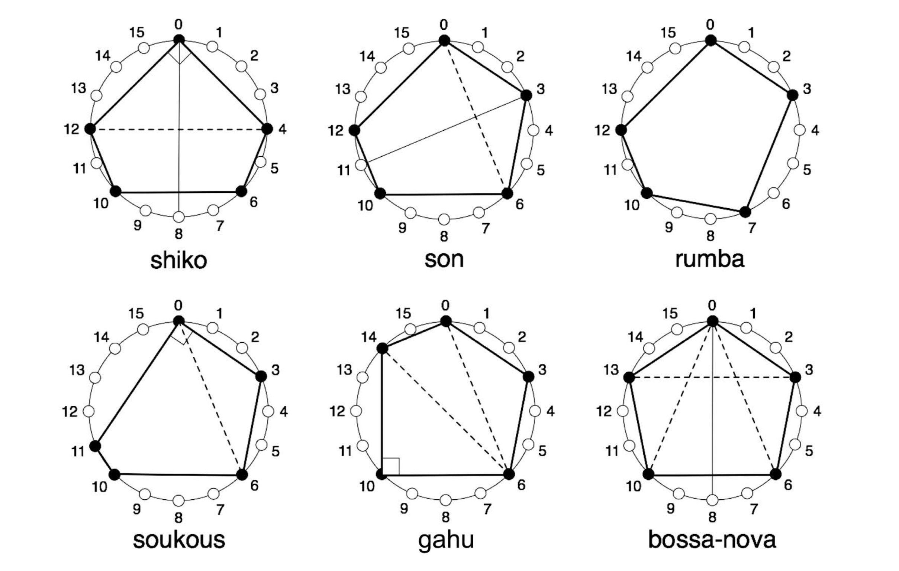
对节奏模式进行几何拓扑学分析的现代节奏理论图示[50]在非西方音乐体系中，许多宝贵知识以师傅对徒弟的“口耳相传、身传心授”世代流传。对于音乐这种转瞬即逝的听觉艺术，如果抱死“只有白纸黑字写在书上的才叫理论”，注定会错失真正宏伟壮丽的声音本质。
20世纪：爵士乐理论的崛起
将视线再次调回北美。进入20世纪，美国音乐史上迎来了一场彻底改变世界音乐版图的奇迹——*爵士乐（Jazz）*的诞生。 爵士乐诞生于20世纪初美国南部港口城市新奥尔良。作为面向加勒比海的中枢港口，这里多元异域文化极易汇聚碰撞，加之历史上对非裔相对宽容的人文土壤，多种族文化在此交汇发酵。由黑人音乐家将布鲁斯（Blues）、拉格泰姆（Ragtime）与铜管乐器巧妙杂交融合，开创了这一划时代的黑人音乐形态。
打开音乐示例 ↗King Oliver’s Creole Jazz Band 《Dippermouth Blues》 (1923)
今天人们习惯将爵士乐视作高雅典雅的沙龙艺术，然而在其诞生初期，夹杂着严重的种族偏见，它一度被主流社会斥为“低俗下作的黑人丛林音乐”。不过这种诋毁背后，何尝不隐隐夹杂着白人中产阶层对黑人音乐那种尽情释放生命张力与奔放律动的由衷艳羡：
 沃尔特·金斯利 (1876–1929)
沃尔特·金斯利 (1876–1929)
“这群家伙企图唤醒非洲热带雨林深处不可名状的原始节奏！野蛮人正用早已失落的狂放节拍向我们挑衅！而我们听音乐时，甚至连打个响指跺个脚都会被斥为不体面……[69]”
历史的剧本再次重演：爵士乐不可阻挡地征服了全体大众，到了20世纪30年代，由多名管乐演奏家组成的大编制大乐队（Big Band）在各大高档舞厅风靡全国，化身为当时的超级主流大众舞曲娱乐。
打开音乐示例 ↗格伦·米勒 《In The Mood》 (1939)
这段白人大乐队的影像极具历史隐喻色彩——它见证了爵士乐登顶大众主流文化巅峰的辉煌。 然而大众化与商业化的高峰往往也是先锋反叛的起点。到了20世纪40年代，厌倦了商业模式化大乐队的非裔先锋乐手们，转向以小编制乐队展开以高度个人即兴Solo为灵魂的全新风格——“比博普（Bebop）”。
打开音乐示例 ↗查理·帕克 《Celebrity》 (1949?)
这段现场尽显比博普的灵魂：虽然大体遵循既定的和弦框架轮廓，但具体的音符跑动完全依赖乐手在舞台瞬间的极限爆发力与灵感反应。这种带有极限竞技色彩的高超艺术，同时承载着非裔音乐家以超绝技艺确立自身“严肃纯艺术大师”尊严、向种族歧视发起文化反击的壮烈使命[51]。在音乐史上，自比博普之后的一系列现代爵士流派，统称为“现代爵士（Modern Jazz）”。
催生新理论的时代渴求
现代爵士以“现场即兴合奏（Jam Session）”为绝对核心的文化，给音乐理论界投下了一枚重磅炸弹。数名乐手在没有具象乐谱指引的条件下，于现场分秒之间协同构建出一首复杂乐曲——如果大家各行其是乱吹乱弹，声场必然在三秒内彻底车祸崩溃。
如何在脑海中瞬间组织出高级优美的乐句？哪些音是安全的主干音，哪些音会造成灾难性的撞音？……翻遍所有以“精雕细琢纸面古典作曲”为前提的传统古典乐理大部头，也找不出半句现场即兴的指南。为了服务于‘即兴合奏’这一全新艺术物种，必须诞生一套全新的音乐理论。
🏫 史上首创的大学爵士系
街头地下酒馆里的黑人大宗师们靠着超绝耳力与夜以继日的切磋口口相传、自成一体；然而那些渴望学习这一先锋秘技、却难以融入非裔街头圈子的白人年轻学子，陷入了无处求师的巨大焦虑之中。为了迎合这种强烈的系统学习需求，1947年，全美首个设立正式爵士专业的学术机构在北德克萨斯大学（UNT）建立。
北德克萨斯大学的课堂风貌[52]
然而荒诞而充满历史张力的是：创设专业的发起人清一色是白人学者，首批获准入学的学生也全是白人。这项发端于非裔黑人血泪深处的原生艺术体系，其高等学院化教育竟是在一间没有半个黑人面孔的教室中拉开序幕的[53]。
📗 首部系统化爵士理论著作
与学院白人体系相对，历史上第一部真正意义上的“爵士理论专著”，是由非裔天才作曲家*乔治·拉塞尔（George Russell）*独立撰写的。他原本是位优秀的爵士鼓手，在生涯黄金期不幸罹患肺结核长期住院。病榻之上他没有向命运低头，凭借顽强毅力推演构思，终于在1953年出版了震撼乐坛的巨著——《调性组织之利底亚色彩概念（The Lydian Chromatic Concept of Tonal Organization，简称 LCC）》。 拉塞尔在书中大量使用了玄奥精深的物理力学修辞，字里行间恍如当年被称作“音乐牛顿”的拉莫再世。学者指出，拉塞尔采用严谨硬核的学术语汇，本身就蕴含着借用学院派语言霸权、迫使白人精英阶层承认爵士乐具备至高心智艺术价值的政治策略考量[54]。
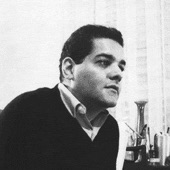
乔治·拉塞尔 (1923-2009)
“音阶蕴含着垂直方向的重力场，并构成自我组织的统一场。该音阶彰显着水平维度的音乐能动性，在线性时间的流淌中持续向终极重力中心归拢融为一体……”
作为史上首部爵士理论典籍，拉塞尔的学说极具超现实的前卫野心。它绝非对前人即兴套路的平庸归纳，而是一套前所未见的先锋拓扑推导引擎。在他的理论启发下，一批伟大的爵士宗师开启了更为前卫深邃的声音探索：
打开音乐示例 ↗比尔·埃文斯 《Peace Piece》 (1958)
打开音乐示例 ↗约翰·柯川 《After The Rain》 (1963)
爵士乐与爵士理论便是在这样一段与种族伤痛错综交织的复杂背景下一步步成长的。不过历史同样充满温情：例如上面提到的名家比尔·埃文斯便是一位白人钢琴大师。即便从宏观政治看世界充满壁垒，但在微观的具体音乐家个体之间，跨越肤色的深厚艺术共鸣与真挚友谊依然熠熠生辉。
📕 走向大众的实用爵士教本
不过，拉塞尔那套充斥着前卫形而上玄学的深奥理论，对于绝大多数普通初学者而言无异于天书。大家迫切需要一本更加基础、接地气、指导具体怎样弹奏即兴的实用入门指南。率先填补这一巨大市场空白的，依然是白人音乐学者。自1960年代起，一系列规范清晰的爵士基础教材密集问世：
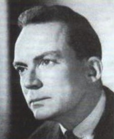
约翰·米根 (1916-1984)
“本书将向世人彻底证明：即兴演奏绝非什么不可言说的神秘通灵巫术！它完全是一门有迹可循、人人可学的严密科学！[70]”
杰米·埃伯索尔德 (1936-)
“大家听我说！把只有伴奏背景音乐的黑胶唱片，和理论教本捆绑在一起打包销售，所有人不就能在家里跟着唱片尽情练习即兴Solo了吗？！[71]”
爵士界大胆吸收了古典理论中的罗马数字与调性框架，大刀阔斧删去了古典对位中冗长死板的旧规矩，增补了和弦音阶对应体系（Chord-Scale Theory）与张力音（Tensions）法则，构筑了一套完全以即兴演奏为导向的全新理论体系。新理论推演成熟、大学专业纷纷设立、标准化教材全面普及——自此，乐理界的第二座擎天大厦——*现代爵士理论（Modern Jazz Theory）*正式傲然耸立🎉 在这些现代爵士教本中，为了指导乐手安全即兴，同样写满了“在这种和弦下尽量避开某音（Avoid Note）”等告诫。换句话说，理论在此处再次充当了裁决音乐“安全正确与碰撞错误”的审判者。而这些指导原则，又成为了流传至今的现代音乐理论中的又一套“核心禁则”。
口耳相传的原生爵士哲学
当然，并非所有爵士名宿都买白纸黑字教材的账。在老一辈大师中，有人即便早已构建起极度宏大精妙的即兴理论框架，却终生拒绝将其出版成书，而是数十年如一日坚持面对面现场教学：
巴里·哈里斯 (1929-2021)
“绝不能像那帮古典书呆子一样做过度纸面分析！坐到琴凳上，先弹出来！现在全世界很多人全在死背错误的教条，必须彻底纠正这种病态现状！[72]”
音乐理论作为服务于艺术创作的知识，本质上天然带有*方法论（Methodology）*的多元属性。登上同一座山峰的登山路径绝不止一条，指引通往卓越即兴演奏的理论哲学同样不止一家之言。爵士理论直到今天，依然在百家争鸣的探索中生机勃勃地演进着。
爵士之后的现代流行乐汪洋
随着比博普之后爵士乐走向高度深奥先锋化，其大众流行度逐渐式微，听众被随后爆发的新兴流行潮流所分流。1960年代，英国披头士乐队（The Beatles）横空出世，成为现代流行音乐的全新灯塔，音乐流派的裂变分化迎来了前所未有的大爆发。
歌单中收录了1966至1970年间的经典曲目：褪去复古模拟音质的滤镜，其音乐肌理已直接涵盖了摇滚（Rock）、R&B、说唱雏形（Rap）、早期电子音乐、偶像流行曲（Idol Pop）、雷鬼（Reggae）……漫步至此，我们终于踏入了与当今现代流行乐无缝接轨的时代原野。 这些现代流派的血脉源流极其庞杂：美式布鲁斯、乡村乐、拉丁切分舞曲、非裔灵歌……虽然它们同样汲取了古典与爵士的丰富养分，但绝非这两者的“单线单传直系子嗣”，而是各自孕育出了完全独立、自洽而独特的音乐哲学。
令人唏嘘的是，面对这波浩瀚的新时代音乐浪潮，理论家们却未能及时总结出一套全新的、具备普遍共识的全新理论体系。或许是因为商业音乐人的需求多元分散，抑或是流派间的创作思维差异实在太过悬殊。回头审视，爵士理论当年之所以能顺利完成学院体系化，反倒是一次天时地利人和完美交汇的罕见孤例。
乐理流派与规则的真面目
行文至此，我们可以清晰地看到奔涌在现代西方音乐理论版图中的两条主要大河：诞生于18世纪的“古典派理论”，与诞生于20世纪中叶的“现代爵士理论”。抛开各种细微的分支支流，把这两者视作传统乐理的两座核心大山，最契合当今音乐界的客观实貌。 这两大流派虽然共享着部分术语与记谱符号，但由于它们各自瞄准的是截然不同时代、截然不同风格形态的音乐标的，其底层创作哲学大相径庭，在诸多关键环节甚至针锋相对、相互矛盾。

两者绝无高下优劣之分。更重要的是：无论哪一个流派，它们充其量都仅仅是针对欧美特定时代的一小部分音乐所归纳的局部理论而已。

跳出思维局限纵观全局，你会发现传统乐理的世界其实非常有限。在这个狭窄范围之外，存在着浩瀚的多元音乐智慧：中南米与非洲大陆流淌着博大精深的节奏律动理论；未曾提及的亚洲古国孕育着极其绚烂的微音程与调式音阶宝库；现代更有用严密高等数学公式建模音乐的先锋理论；乃至如前所述由艺术家个人独创的私人法则体系……音乐理论从不是某种单一的圣经，音乐理论的本质，是人类用来阐释、构筑某一种具体音乐形态的无数人为认知系统的统称。
关于“乐理规则与禁则”
在这趟历史巡礼中，“禁则”一词主要出现了两次：一次是古典派为了维持严整形式美而明令排除在标准“范式”之外的手法；另一次是爵士界为了保证现场合奏不翻车而制定的“即兴礼仪与避撞指南”。
古典派理论
“我们归纳了古典时期的黄金典雅范式。非标准的小众做法，我们就一律标注为‘不可采用’啦。”
现代爵士理论
“为了让大家在舞台上流畅Solo，我们制定了这套排雷指南。容易在即兴中打架翻车的音，我们就提醒大家‘务必规避’啦。”
显而易见，这完全属于高度情境化的特定产物，如果非要叫它“规则”，充其量不过是特定圈子里的“局部家规（Local Rules）”。音乐本就永远处于奔腾流变之中，21世纪的先锋音乐将这些陈旧的历史旧规砸个粉碎并大获成功，在逻辑上完全是顺理成章、理所应当的必然。
在通晓了这层历史本质之后，那种“音乐理论是全人类公认的听觉真理法则”等神圣化宣传，便不攻自破了。“要想破格先学规矩”这句话诚然有一定道理，但关键在于：不同音乐风格的规矩与范式有着天壤之别。绝无任何硬性规定要求每一位现代音乐人都必须先去给欧洲古典乐或早期爵士乐当几年门徒。 在本网站的教学体系中，虽然同样会详尽拆解这些理论中的“规则”，但我们的立足点始终是：严格遵循会呈现出怎样的审美妙趣，打破常规又能换来怎样的新鲜色彩。拒绝盲信盲从，坚持主体判断，在恰当的创作场景将理论作为随心调用的“工具箱”——这便是我们所提倡的“支配乐理”的核心真谛。
漫长而宏伟的历史巡礼终于圆满落幕！通读至此或许花费了你不少心力，但这份付出绝对物超所值。你已经在最根本的认知底层，彻底建立了关于音乐理论的清醒通透：
- 世界上不存在唯一的真理音乐理论，更没有包治百病的万能乐理。
- 正因如此，根据自己的创作目标，灵活借用多元理论工具才是明智之道。
- 音乐理论的历史就是一部被先锋音乐家不断打破、进而催生新理论的颠覆史。
- 每一个时代的流行风向与审美范式，都会深深烙印进该时代的理论肌理之中。
看清了音乐理论的本来面目，相信你的内心已经卸下了沉重的精神枷锁，获得了前所未有的舒展与自由。
然而，新的谜团随之而来：市面上随处可见的所谓“普通现代流行音乐理论”，其内在构造究竟是怎样的？既然两大源头是古典与爵士，那“流行音乐理论”究竟是何方神圣？让我们在下一篇文章中继续一探究竟！